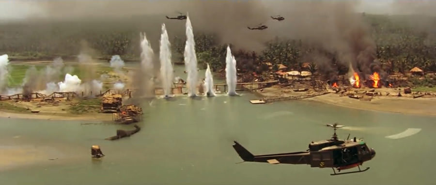

نزدیک به چهل سال قبل، فرانسیس فورد کاپولا با «اینک آخرالزمان» که اشخاصی مثل هریسون فورد، مارلون براندو و مارتین شین جزو گروه بازیگرانش بودند، شاهکار پراهمیتی را آفرید؛ یکی از انسانیترین فیلم های جنگی تمام دورانها. سینمای جنگمحور، همیشه به سبب داشتن لحظههایی خیرهکننده و متمایز که باعث میشوند نتوان آن را در خیلی مواقع با هیچ زیرژانر سینمایی بزرگ دیگری مقایسه کرد، آثاری را شامل شده است که در عین داشته وجوه مشترک بسیار، تفاوتهای بنیادین و تکاندهندهای نیز با یکدیگر دارند. تا جایی که حتی وقتی معروفترین و شناختهشدهترین فیلمهای جنگی کارگردانهای بزرگ را نگاه میکنیم، با ساختههای سینمایی به شدت متفاوتی روبهرو میشویم که به کمک هر کدامشان بخشی از جلوههای مهم این سینما را دیدهایم. برای نمونه، «نجات سرباز رایان» (Saving Private Ryan) به کارگردانی استیون اسپیلبرگ، حکم قصهای تماشایی و شکوهمند از وفاداری را دارد که به سادگی هر چه تمامتر میشود افتتاحیهاش را دربردارندهی سکانسهایی دانست که گذر سالها هیچ تاثیری روی شدت شگفتانگیز جلوه کردنشان نگذاشته است و پایانبندیاش هم همچون دریایی از احساسات تلخ و شیرین به نظر میرسد که قهرمانپردازیهای کلیشهشده در سینما را برمیدارد و چند قدم جلوتر میبرد. «خط باریک سرخ» (The Thin Red Line) اثر ترنس مالیک، فارغ از روایت داستانی استادانهاش که انگار به تکتک سربازان حاضر در تمامی جنگها شخصیتپردازی تازهای بخشیده است، قاببندیها و دکوپاژهایی دارد که هنوز کسی نتوانسته به درستی حتی نسخهی تقلیدشدهشان را بسازد. «غلاف تمامفلزی» (Full Metal Jacket) استنلی کوبریک، از منظر گستردگی تعاریف و فلسفهپردازیها، با خیلی از برترین آثار دیگر ژانرهای سینمایی نیز رقابت میکند و حتی در همین اواخر هم هنر هفتم به سبب مواجهه با «دانکرک» (Dunkirk) کریستوفر نولان، فرصت رویارویی با جنگ از جنبههای کلیتر و کمهیجانتر و غیر حماسیترش را درون روایتی تصویرمحور و کمدیالوگ پیدا کرد. ولی فارغ از تمامی این فیلمها و چندین و چند اثر محترم، بزرگ و دوستداشتنی دیگر که هر کدام نگاهی ویژه به تلخترین و کشندهترین رخدادهای تاریخ معاصر حیات انسان انداختهاند، فرانسیس فورد کاپولا قبل از تک به تک این آثار فیلمی را ساخت که هنوز از بسیاری از مناظر فنی بزرگتر، در بسیاری از قسمتهای داستانی تکاندهندهتر و در خلق روایتی خارقالعاده، از خیلیهایشان حسابشدهتر و دقیقتر جلوه میکند. آن هم درون جهنم بزرگی که شدت وحشتناک بودنش به قدری بود که دوازده سال پس از اکران اثر اصلی، النور کاپولا، جورج هیکنلوپر و فکس بار، مستند تحسینشده و فوقالعادهای از مراحل آفرینش این فیلم با نام «قلب تاریکی: آخرالزمان یک فیلمساز» (Hearts of Darkness: A Filmmaker's Apocalypse) ساختند.
کارکرد «اینک آخرالزمان» در شکل دادن به بخشی از هویت سینما، برآمده از خلاقیتهای عظیمی است که سازندگان بزرگ آن در خلق تک به تک دقایقش به کار گرفتهاند. چون فیلم قبل از رسیدن به عناصر فرامتنی بینظیر، روایت مشخص و واضحی دارد که به طرزی پیچیده، یک قصهی سه ساعت و شانزده دقیقهای را راحتتر از خیلی فیلمهای صد دقیقهای روایت میکند. این موضوع، نخست از آنجا آغاز میشود که فیلم خط داستانی به شدت واضح و قابل درکی را یدک میکشد و در همهی سکانسهای آن، درگیری فیلمساز با تماشاگرش صرفا بر سر چگونه تعریف کردن داستان و نحوهی کات زدن به نقاط گوناگونش است. در جلوهی اول، بیننده صرفا متوجه میشود که فیلم میخواهد داستان فردی به نام ویلارد را روایت کند که به عنوان یک کاپیتان کهنهکار جنگی، مجددا به خطوط مبارزه دعوت میشود و با گرفتن مسئولیت انجام ماموریتی تماما مخفیانه، وظیفهی به قتل رساندن و از بین بردن یکی از اعضای شناختهشده و بزرگ نیروهای ویژهی آمریکا که حالا در کشوری با مرز مشترک با ویتنام اقدام به ساخت چیزی شبیه به حکومتی مستقل برای خودش کرده است، به او متحول میشود. فیلمنامه هم عملا تشکیلشده از چیزی جز حرکت ویلارد به همراه چند نفر و با کمک یک قایق در مسیری بلند و خطرناک که به مکان مخفی شدن فرد مورد نظر ختم میشود نیست و جزئیات داستان، بر مبنای توقفهای اجباری یا مطابق میل این گروه در بخشهایی مختلف از جبهههای جنگ در ویتنام یا حرکتشان در طول آبهای این کشور، رقم میخورد؛ ولی در اشکال و حالاتی که به واقع در عین داشتن تفاوتهای بسیار، همیشه محکم و استخوانبندیشده و یگانه، باقی میمانند.
Apocalypse Now از نظر روایت داستانی، باید با دو نگاه متفاوت موشکافی شود. دو نگاهی که توجه به آنها از سوی فورد کاپولا، به ترتیب باعث حفظ تمام و کمال تماشاگر و افزایش شدت تاثیرگذاری اثر شدهاند. در جلوهی نخست، فیلم با بهرهگیری از داستانگوییهایی با لحنهای کاملا متفاوت، مدام تلاش میکند تا به بینندهی خود دلیلی دوباره برای ادامه دادن به دنبال کردن سکانسهایش بدهد. اول، با استفاده از انداختن تصاویر مختلف روی یکدیگر که یکی از تکنیکهای اصلی تدوین آن به حساب میآید، برای چند دقیقهی کوتاه ذهن آشفته و نابودشدهی فردی بازگشته از جنگ را نشان میدهد و سپس میرود به سراغ جلوه بخشیدن به ماجراهایی هیجانانگیز و سری که شخصیت اصلی قصه، به زودی باید با آنها دست و پنجه نرم کند. در مرحلهی بعدی اما کاپولا شخصیت را در کنار کاراکترهای همراهانش به قهرمانی بزرگتر و ارزشمندتر از قبل تبدیل میکند و در عین حال به وسیلهی خوانده شدن اطلاعات مرتبط با آنتاگونیست داستان یعنی کلنل کرتز توسط ویلارد، بدون نشان دادن تصویر کاراکتر منفی حتی برای یک ثانیه، موفق به افزایش عمق وجودی وی برای بینندگان میشود. در ادامه هم فیلمی که ابدا به نظر نمیرسید که میتواند دارککمدیهای خندهآور هم داشته باشد، سراغ قرار دادن شخصیتهای اصلی در کنار یکی از فرماندهان کاملا دیوانهی آمریکایی میرود و مسخرگی و بیهویتی صفر تا صد این قتلهای احمقانه درون جنگ را لابهلای پرداختن به میل او به موجسواری کردن وسط میدان بزرگی از شلیک اسلحهها و پرتاب بمبها بررسی میکند!
به تصویر کشیدن جلوهی کاملا زمینی و کمارزش سربازها به عنوان حیوانهای سیرک بزرگی که ادارهکنندگان آن خوب راه سرگرم کردنشان را میدانند، ایستگاه بعدی کاپولا محسوب میشود. البته در چنین لحظاتی از داستان، فیلمساز ابدا نسبت به افراد مورد اشاره نگاه از بالا به پایینی ندارد و تنها شدت معصومیت و شاید به بیان واضحتر قاتلین بالفطره نبودنشان را به رخ میکشد. چیزی که در ادامه و با برخورد مستقیمتر شخصیتهای قرارگرفته در قایق اصلی با آنچه که همهی سربازان را خیره کرده بود، شخصیتر و دردناکتر از قبل نیز روی اعصاب تماشاگر میرود. ادامهی قصه، دوباره با پیچش بسیار عجیبی مواجه میشود و مسخرگی و بیاهمیتی زندگی انسانها در جنگ را با کمک خلق ثانیههایی وحشیانه از قتل انسانهای بیگناه توسط اعضای قایق، به یاد مخاطب میآورد. مخاطبی که تا همینجا چندین و چند لحن متفاوت را تجربه کرده است و در عین حال به سبب خطکشیهای معرکهی فیلمساز مابین بخشهای مختلف قصه، ابدا حس دیدن داستانی پارهپاره را پیدا نمیکند. مثلا در جایی از فیلم، وقتی صمیمیتر شدن اعضای قایق با یکدیگر و شکلگیری شیمی مناسبی مابین آنها را میبینیم و در عین حال تجربههای سیاه و شاید هولآورشان از حرکت درون میدانهای مبارزهی بزرگی در ویتنام را به وضوح لمس میکنیم، صدای روی تصویر ویلارد شنیده میشود که در قالب نریشن، میگوید رویای همهی آنها بازگشتن به خانه است و من که در اواسط جنگ به خانه بازگشتهام، خوب میدانم که پس از جنگ دیگر اصلا چنین چیزی وجود ندارد. دیالوگی که به شکلی دیدنی باعث میشود در همین لحظه، بیننده سریعا به یاد دقایق ابتدایی و تماشای وجود زخمی و نابودشدهی ویلارد در خانهاش بیوفتد و شخصا امید و تلخی تمامناشدنی جنگ را در ذهنش با یکدیگر در هم بیامیزد.
مبارزههای تلختر، لحظات قرار گرفتن در خانهی مردمان مقاومی که نمیخواهند مکان زندگیشان را ترک کنند و سربازان را با آغوش باز میپذیرند و بالاخره دیوانهوارترین بخش فیلم که به رسیدن گروه به محل حکومت محلی کلنل کرتز اختصاص دارد نیز هر کدام به شکلی مخصوص به خود، با لحنهای تازه به جذب تماشاگر میپردازند. اینها باعث میشود که وقتی Apocalypse Now را دنبال میکنید، همیشه با قصهای با یک خط داستانی کاملا واضح و خردهپیرنگهایی به شدت مهم و باز هم کاملا قابل درک مواجه شوید که با یکدیگر تفاوتهای زیادی دارند. چیزی که به کارگردان اجازه داده است تا صحبتها، تفکرات و مفاهیم کاملا متفاوتی را در فیلمش بگنجاند و در عین حال، برخلاف آنچه حتی در فیلم ماندگاری مثل «غلاف تمام فلزی» میبینیم، هیچکدام از قسمتهای فیلم حتی برای چند ثانیه پیوستگی روایی آن را از بین نبرند. رخدادی پرارزش که اگر راستش را بخواهید، در کنار خلق خطوط نامرئی در ذهن مخاطب مابین قسمتهای مختلف فیلم، داستانگویی شخصیتمحور کاپولا در «اینک آخرالزمان» هم در اتفاق افتادن آن، تاثیر انکارناپذیری داشته است. به بیان بهتر، Apocalypse Now هرگز به شکل جدی کاراکترهایش را از هم جدا نمیکند و همیشه آنها را به عنوان اعضای قایق، در کنار یکدیگر نگه میدارد. همین هم باعث میشود که در عین تعدد خطوط داستانی فرعی، بیننده هرگز ملزم به دنبال کردن قصههایی از نقطهنظرهای گوناگون نباشد و پیرنگهای مختلف را از نگاه یک شخصیت بزرگ ثابت (کل گروه) و مخصوصا شخص ویلارد دنبال کند. البته که در این میان کاپولا بعضا از روشهای محدودتر و کوتاهمدتتری مثل بخشیدن لحظات شیرین و لبخندهای آرامشبخش به بیننده، احساسی کردن او نسبت به کاراکترها و افزایشِ لحظهای اما به یاد ماندنی همذاتپندری با یک شخصیت در ثانیههایی خاص از داستان هم بهره میبرد. ولی حقیقت آن است که اصلیترین دستمایههای او برای نگه داشتن طولانیمدت مخاطب، همین دو مورد شدیدا لایق تحسین هستند.

با همهی موارد گفتهشده، همانطور که پیشتر نیز اشاره کردم، یکی از مسائل پراهمیت دیگری که موقع بررسی روایت داستانی «اینک آخرالزمان» باید به آنها توجه کرد، چگونگی رسیدنِ کارگردان اثر به فرمی است که به خاطر آن تماشاگر لحظه به لحظهی داستان را باور میکند و از آن بالاتر، برایش ارزش قائل میشود. این فرم داستانی که به شکل انکارناپذیر تکتک بخشهای فیلم با توجه به آن سر و شکل پیدا کردهاند و رد پای تلاش برای خلق صحیح آن را میشود در کارگردانی و تدوین فیلم هم به سادگی هر چه تمامتر مشاهده کرد، بر اساس گم شدن مخاطب مابین داستانگوییهای سینمایی و روایتهای مستندوار، بیشترین نمود خود را پیدا میکند. Apocalypse Now، با استفاده از قاببندیهای بیآلایش در برخی لحظات، بهرهگیری از تکنیک انداختن تصاویر مختلف بر روی یکدیگر و ضبط نماهای ثابت و بدون حرکت و صد البته قرار دادن نریشن بر روی حجم بالایی از تصاویرش، گاهی مواقع هیچ فاصلهی به خصوصی با یک مستند جنگی ندارد. طوری که برای نمونه وقتی پس از چند دقیقه مشاهدهی حرکت عادی قایق بر روی آب و شنیدن صدای تفکرات ویلارد به کمک نریشنها و زوم کردن روی پروندههایی مرتبط با کلنل کرتز، ناگهان به خودمان آمدیم و دیدیم که در حال تماشای صحنهای اکشن و هیجانی با عناصر هیجانی و سینمایی متفاوت هستیم، هم این تجربهی ناگهانی باعث افزایش شدت لذت بردنمان از آن ثانیهها شود و هم بفهمیم که در فرم داستانگویی «اینک آخرالزمان»، سکانسهایی هم وجود دارند که بیننده باید مثل درسهایی از تاریخ جنگ ویتنام با آنها مواجه شود. چنین ویژگی ستایشبرانگیز و بزرگی، کاری میکند که خود ما هم خیلی سریع در ذهنمان دست کاپولا را برای سرگرم کردنمان بازتر بگذاریم. طوری که نه از راه رسیدن لحظات آشنا و دوستداشتنی سینمایی فیلم هرگز برایمان حکم افتی در روایت را پیدا کنند و نه از جدیت لحظات خشک و سرتاسر واقعگرایانهی آن زده شویم.
شخصیتپردازی شاید غلطاندازترین قسمت از دنیای شگفتانگیز «اینک آخرالزمان» باشد. چون دقیقا همان بخشی از فیلم است که نه میتوانید استانداردهای مورد انتظارتان از خلق کاراکتر درون فیلمی با این عظمت را درونش بیابید و نه با خلق متفاوت جذابیتهای لازم، میگذارد که به سادگی به خودتان اجازهی عیب گرفتن از آن را بدهید. چرا که فیلم در این بخش نه کاملا بیاشکال است و نه به سادگی میتوانیم علت جذبکننده بودنش را درک کنیم. ماجرا این است که فرانسیس فورد کاپولا، در Apocalypse Now به جای خلق قوسهای شخصیتی گوناگون برای کاراکترها، شخصیتهای تختی را تحویلمان میدهد. البته این به معنای تکبعدی بودن آدمهای حاضر در قصهگویی فیلم نیست و بیشتر به تغییر نکردن درونی آنها ارتباط دارد. کاپولا، کاراکترهای فیلمش را طوری سر و شکل داده است که از تعاریف مشخصی تشکیل شده باشند و در عین حال، آرامآرام و بدون عجله به معرفی کامل خودشان بپردازد.
به همین سبب حتی ویلارد، قهرمان خاکستری داستان که مانند مابقی شخصیتها هرگز تغییر خاصی پیدا نمیکند، همیشه در داستان حکم فردی پویا را دارد که بیننده از ثانیههای ابتدایی تا آخرین لحظه، مهیای همذاتپنداری کردن با وی به نظر میرسد. چرا که او شاید کاراکتری چندخطی و بیواکنش نسبت به رخدادها باشد اما همین چند خط را به مرور و در موقعیتهایی کاملا متفاوت، نشانمان میدهد. مثلا در نقطهای از فیلم برای اولین بار با شلیکی بیرحمانه بخش تاریک درونش را به رخ میکشد و در جایی دیگر از داستان، عاشقانه سراغ لذت بردن از موارد عادی زندگی در استراحت کوتاه مابین توقف و حرکت دوبارهشان به سمت مقصد میرود. همین موضوع، سبب میشود که او و تمامی شخصیتها قصه به جای تغییر کردن به خاطر رخدادها، در رخدادهای مختلف حقیقتهای گوناگونی دربارهی خودشان را افشا کنند و سیر شخصیتپردازی کاپولا در فیلم، طولانیمدت، مرتب و تمامناشدنی باشد. طوری که حتی شخصیت منفی قصه هم از ابتدا تا به انتهای ماجرا، بیشتر و بیشتر از قبل، پیچیده و خاص به نظر برسد. یک روش شاید عجیب که میتوان آن را سبکی کماشکال و غیرایدهآل خطاب کرد که در برابر نکات قوت تمام و کمال فیلم، هرگز نمیتواند به عنوان یک نقطهی ضعف، شناخته شود و حتی شاید به بازیگران هم برای ارائهی عملکردهایی خیرهکنندهتر، کمک کرده باشد.
تقریبا تکتک نقشآفرینهای اصلی «اینک آخرالزمان»، با پیروی از همین فرمول نهچندان پیچیده اما جالبِ توجه در پرداخت شخصیتها، سعی میکنند به شکل ناگهانی مخاطبان اثر را جذب کنند. به همین دلیل هم تقریبا هر کدام از آنها، حداقل یک سکانس را دارند که درونش تصویری به یاد ماندنی از خود باقی بگذارند و در مابقی لحظهها، غالبا خنثی به نظر میرسند. در حالی که همین حالت آنها به شکلدهی فرم فیلم نیز کمک میکند و اجازه میدهد اثر در لحظات مستندگونهاش، شبیه به تصاویری ضبطشده از سربازهایی واقعی در میدانهای جنگ ویتنام ظاهر شود و قضاوت نکردن تکتک کاراکترها و به خصوص شخصیت منفی با بازی معرکهی مارلون براندو، برای مخاطب راحتتر از آنچه که انتظار دارید، جلوه کند. استفادهی مثالزدنی کاپولا از تکنیکهای روایت تصویری که به سبب محدودیتهای صنعت تدوین در دههی هفتاد میلادی، یقینا بسیار زمانبرتر از تمامی پروسههای مشابه برای فیلمهای امروزی به نتیجه رسیدهاند، باعث میشود Apocalypse Now یکی از آن معدود فیلمهایی باشد که حتی اگر صدایش را به کل هم قطع کنید، هنوز بتواند همهی بخشهای اصلی داستان را تقدیمتان کند. کارگردان حتی در سادهترین سکانسها که صرفا بر پایهی گفتوگوی چند کاراکتر گوناگون پیش میروند، همیشه انقدر با دقت قابهای دوربین را انتخاب کرده است که بیننده با توجه به نحوهی واکنش نشان دادن شخصیتها، بتواند اصلیترین بخشهای قصه را درک کند. جلوهی کمالگرایانه این روایت تصویری هم در نماهای دیزالو به چشم میخورند؛ جایی که کاپولا با انداختن سکانسهای مختلف بر روی هم به زیبایی پیوندهای خارقالعادهای مابینشان برقرار میکند و حتی بعضی محدودیتهای سینما در نگاه برخی مخاطبان را پشت سر میگذارد. مثلا همیشه یکی از نکاتی که دربارهی قابلیتِ آثار سینمایی برای روایت داستان در برابر رمانها بیان میشود، آن است که فیلمساز نمیتواند مثل نویسندهی کتاب که یک پاراگراف دربارهی افکار جریانیافته درون ذهن کاراکتر مینویسد، بدون دیالوگ چنین کاری را انجام دهد. در حالی که در دقایق آغازین «اینک آخرالزمان»، شما تصویری از سر ویلارد، نماهایی از جنگلهای ویتنام و بعد آتش گرفتن این جنگلها و چندین و چند اتفاق تلخ دیگر را با نماهای کمرنگ افتاده روی یکدیگر میبینید تا بعد از کات زدن به سکانس دیوانگیهای ویلارد در خانهاش، دقیقا بفهمید که نخست به درون ذهن آشفتهی او پا گذاشتهاید و سپس فعالیتهای این ذهن آشفته را دیدهاید.
رنگبندیها، جلوههای ویژهی میدانی باشکوه و تحسینبرانگیز، روایت سیال داستان، نماهای بزرگ و تکاندهندهای از حرکت ابزارآلات جنگی همچون هلیکوپترها در برابر خورشید ویتنام و پایانبندی چهل دقیقهای و تکاندهندهای که با فکر کردن به نقش حقیقی مردم بومی در آن و مسیری که ویلارد به خاطر آن پس از مواجهه با کلنل پشت سر میگذارد، خودتان به معناسراییهای اصلی و خواستنیاش پی خواهید برد، همه و همه تنها بخشی از شگفتیهای «اینک آخرالزمان» هستند. فیلمی که خیلی چیزها دارد ولی وقتی پس از به پایان رسیدن تماشایش به تمام کانسپتهای به کار گرفتهشده برای خلق آن فکر میکنید، میفهمید که بیش ار هر چیز نمایشدهندهی تمامی واکنشهای ممکن از سوی تکتک انسانها، نسبت به پدیدهی جنگ است. از فرماندهای که میخواهد در آبهای ویتنام موجسواری کند تا مردی که هرگز حاضر نمیشود خانه و زندگی همیشگیاش را تسلیم دشمنان کند. از تبعیت مطلق و بیدلیل برخی مردم از هر شخصِ متفاوت با خودشان تا لحظهی کات زدن مابین کشته شدن وحشیانهی یک گاو و یک انسان. جایی که در آن کاپولا ورای همهچیز، میگوید که بدترین بلای جنگ بر سر سربازها میآید. چون اگر انسانهایی وجود دارد که بنا به رسمها و فرهنگهای چند هزارسالهشان در یک شب گاوی را به آن شکل وحشیانه میکشند، در جنگ هم سربازهایی هستند که به همین شکل، مطابق عادت، مطابق فرهنگ و شاید هم مطابق رسمی طولانی، سلاخی میکنند. و این، استخوانشکنترین پیام چنین داستان عظیمی است. حماسهای بلند و انسانی که تاریخ سینما تا ابد ثانیه به ثانیهاش را در یاد دارد.